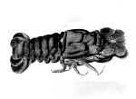
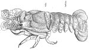

<!DOCTYPE HTML PUBLIC "-//W3C//DTD HTML 4.0 Transitional//EN">

<html>
<head>
	<title>83. De grotebeerkreeft getekend en gedrukt</title>
<!--- stylesheet --->
<link rel="STYLESHEET" type="text/css" href="../../css/style.css">
<link rel="STYLESHEET" type="text/css" href="../../css/default.css">
<script language="JavaScript" src="../../js/index.js"></script>
<script language="JavaScript" src="../../js/browser_stylesheet.js"></script>
<script language="JavaScript" src="../../js/printbug.js"></script>
<script language="JavaScript" src="../../js/functiondetect.js"></script>


</head>

<body leftmargin=0 topmargin=0 marginwidth="3" marginheight="0" bgcolor="White" onLoad="detect()">

<table width="480" border="0" cellspacing="0" cellpadding="0">
<tr>
    <td class="small">
        <a href="http://www.bibliotheek.universiteitleiden.nl" class="small" target="_top">Bibliotheken</a>
		
		<a href="https://www.bibliotheek.universiteitleiden.nl/bijzondere-collecties/tentoonstellingen" class="small" target="_top">Tentoonstellingen</a>
		
		<a href="../../goedgezien/" class="small" target="_top">Goed Gezien</a>
         Objectbeschrijvingen</td>
</tr>
<tr>
  <td class="small"><BR>
  </td>
</tr>

  <tr>
    <td>
      <!--- INHOUD --->
      <a name="top"></a>

      <!--- 4 VERSCHILLENDE KOPJES --->
        	<!---<div class="faculteitsonderdeel">Faculteitsonderdeel</div>--->
        	<div class="hoofdstuk">83. De grotebeerkreeft getekend en gedrukt</div>

    <p><b>a.</b> Cornelius Sittardus(?), Grotebeerkreeft (Scyllarides latus, Latreille 1803).
    Aquarel op papier, 380 x 175 mm. [Z.pl.,] circa 1540.&nbsp; --&nbsp; (Naturalis,
    particuliere collectie). <br>
    <b>b.</b> Conrad Gessner, Historiae animalium liber IIII. qui est de piscium et aquatilium
    animantium natura. Cum iconibus singulorum ad vivum expressis fere omnib[us] DCCVI. [...]
    Tiguri, apud Christoph. Froschouerum, 1558.&nbsp; --&nbsp; (665 A 7) </p>
    <hr>
    <p><a href="c/c083a.htm" target="_top"></a>Conrad Gessner
    (1516-1565) was een van die mannen op wie de renaissance het patent lijkt te hebben: de
    universele geleerde. Geboren in Zürich, studeerde hij in Bazel, Parijs en Montpellier.
    Hij was hoogleraar Grieks in Lausanne en in de medicijnen in zijn geboortestad. Het is
    verbazingwekkend te zien wat en op welke gebieden hij in zijn betrekkelijk korte leven
    publiceerde: rechten, klassieke filologie, botanie, zoölogie, alpinisme, medicijnen,
    vergelijkende taalwetenschap en bibliografie. Hij moet een zeer systematisch ingestelde
    geest hebben bezeten, die uit al zijn werken spreekt. Zo probeerde hij bij voorbeeld op
    negenentwintigjarige leeftijd met zijn <i>Bibliotheca universalis, sive Catalogus omnium
    scriptorum locupletissimus in tribus linguis, Latina, Graeca et Hebraica</i> een
    internationale bibliografie samen te stellen van alle boeken die in de drie genoemde talen
    gedrukt waren.</p>
    <p><a href="c/c083b.htm" target="_top"></a>Maar zijn hoofdwerk blijft
    toch zijn <i>Historia animalium, </i>waarvan tijdens zijn leven vier delen verschenen,
    terwijl het vijfde pas in 1587 van de pers kwam. Deze grote<i> </i>arbeid, waaraan Gessner
    dezelfde titel meegaf als Aristoteles aan zíjn zoölogische geschriften, moet beschouwd
    worden als de encyclopedie van het dierenrijk van de rennaissance. Ze ontstond &#145;met
    de medewerking van vele vakgeleerden en -specialisten&#146;, die Gessner aan het begin van
    elk deel met name noemt. Vaak voegt hij daar nog enige biografische bijzonderheden toe.
    Het eerste deel, dat in 1551 verscheen, behandelt de levendbarende viervoeters; het
    tweede, uit 1554, de eieren leggende, zoals de amfibieën; het derde, uit 1555, de vogels;
    en het vierde, uit 1558, de waterbewoners. (Het vijfde deel ten slotte heeft de slangen en
    schorpioenen tot onderwerp. Een deel over de insekten is nooit zover gekomen dat het
    publiceerbaar was.) </p>
    <p>Alle delen werden rijk geïllustreerd met houtsneden, die vaak &#145;naar het
    leven&#146;, zoals de titel aankondigt, zijn vervaardigd, maar voor andere moest toch op
    bestaande voorbeelden worden teruggegaan, zoals op Dürers neushoorn (zie nummer <a
    href="object079.html">79</a>). </p>
    <p>In de gevallen dat de voorbeeldtekeningen voor de houtsnijder bewaard zijn gebleven,
    kunnen we constateren dat ze van een hoge kwaliteit zijn. Zo ook met de tekening van de
    grotebeerkreeft, die Gessner bereikte via de recent gestorven Neurenbergse arts Cornelius
    Sittardus, die op zijn beurt alles gekregen had van de eveneens al overleden Gijsbertus
    Horstius, die arts in Rome was geweest. Het dier is zeer natuurgetrouw weergegeven, ook
    qua kleuren, waarbij de hemelsblauwe sprieten aan de kop opvallen, een treffend detail dat
    in de tekst ook nadrukkelijk vermeld wordt. De naam &#145;ursa&#146; zou ontleend zijn aan
    de bruine kleur van de kreeft, die lijkt op die van een berin. Het bijschrift bij de
    tekening, waarschijnlijk in de hand van Gessner, luidt: &#145;dormitioso:
    &#03;±&#03;Á&#03;Ç&#03;Ä&#03;¿&#03;½ puto esse ursam vide Bellonij
    descriptionem&#146; ( ?, ik geloof dat de &#145;arktos&#146; [Grieks voor
    &#145;berin&#146;] de &#145;ursa&#146; [Latijn voor &#145;berin&#146;] is, zie de
    beschrijving van Bellonius [Pierre Belon had in 1553 te Parijs een beschrijving van de
    waterdieren uitgegeven; met de Griekse en Latijnse naam bedoelde Gessner hier de
    afgebeelde kreeft]).</p>
    <p>Over het algemeen heeft de houtsnijder zijn voorbeelden goed begrepen, zodat de dieren
    herkenbaar zijn overgekomen. Samen met de kruidenboeken van Brunfels, Bock, Fuchs en
    Dodoens (zie nummer <a href="object098.html">98</a> en <a href="object100.html">100</a>)
    beschikte de zestiende-eeuwer over een prachtige uitbeelding van de hem omringende natuur.</p>
    <hr>
    <p><strong>Literatuur</strong><ul>
      <li>G. Petit, &#145;Conrad Gessner, zoologiste&#146;, in: <i>Conrad Gessner, 1516-1565,
        Universalgelehrter, Naturforscher, Arzt</i>. Zürich 1967, p. 49-56. </li>
      <li>Claus Nissen, <i>Die zoologische Buchillustration. Ihre Geschichte und Bibliographie</i>.
        Stuttgart 1969-1978. 2 dln, nr. 1553, II, p. 113-115. </li>
      <li>C.A. Gmelig-Nijboer, <i>Conrad Gessner&#146;s &#145;Historia animalium&#146;: an
        inventory of Renaissance zoology</i>. [Z. pl.] 1977. </li>
    </ul>
    </td>
  </tr>
 <!--- footer	 --->
        	<table border="0" cellspacing="0" cellpadding="0">
        	<tr>
        		<td colspan="2"></td>
        	</tr>
        	<tr>
        		<td bgcolor="#002E65" colspan="2"></td>
        	</tr>
        	<tr>
        		<td align="left"><a href="javascript:history.back(-1);" class="hornav">vorige pagina</a></td>
        		<td align="right"><a href="#top" class="hornav">top pagina</a></td>
        	</tr>
        	<tr>
        		<td colspan="2"></td>
        	</tr>
        	</table>
    </td>
  </tr>
</table>

</body>
</html>
